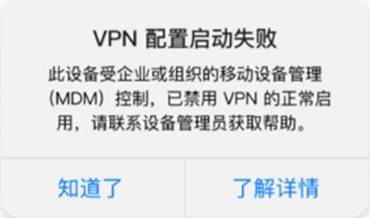
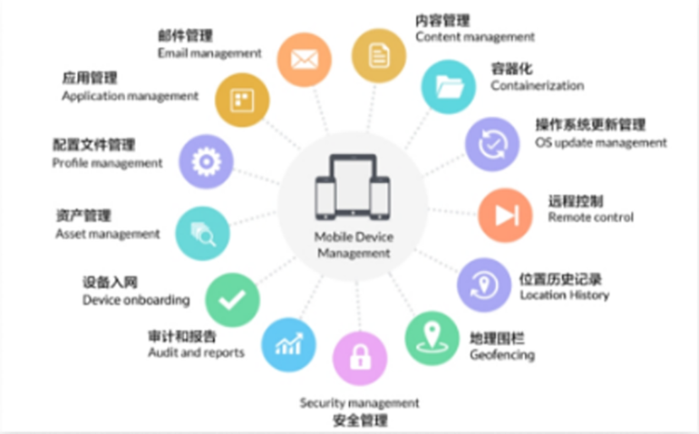
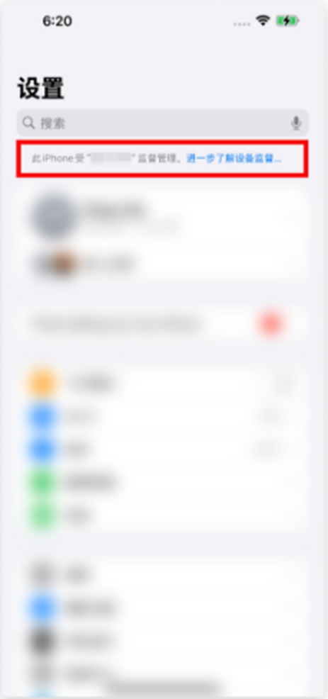
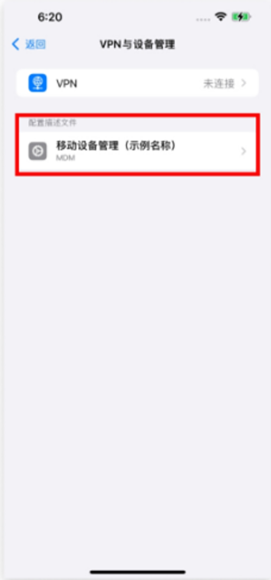
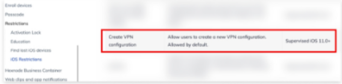

返回
欢迎查看常见问题
智慧服务，让您使用更简单

如何解决iOS18 MDM导致设备 VPN 配置启动失败?
这篇文章会告诉你升级iOS 18 后遇到 VPN 配置启动失败的错误该如何处理
一:用户会遇到的问题现象
随着越来越多的用户更新到iOS 18，我们陆续收到了一些用户反馈，表示 VPN 无法正常启动，并且出现了相关错误提示(如下图)这是由于iOS 18 对移动设备管理(MDM)的权限设置进行了调整，导致应用需要额外的权限才能成功启动 VPN 配置。

二:什么是移动设备管理(MDM)?
MDM(移动设备管理，Mobile DeviceManagement)是一种用于管理和保护移动设备(如智能手机、平板电脑和笔记本电脑)的解决方案。
它的主要功能包括设备监控、应用管理、远程支持等。通过 MDM，企业和组织可以实现对设备的集中管理，降低安全风险并提升管理效率和生产力。

三:如何查询当前设备是否处于 MDM控制?
方法一:
打开“设置”，在顶部查看是否有“此iPhone受'XXX'监管管理”的提示。

方法二:
打开“设置”一“通用”→“VPN 与设备管理”在配置文件中查看是否安装了 MDM 文件(不同的MDM 工具名称可能有所不同，注意名称差异，配图仪为不息】

四:处于 MDM 控制下的设备如何开启VPN 配置权限?
如果您确认您的设备处于 MDM 控制下，请联系设备管理员以获得进一步帮助，每个 MDM 平台的管理方式不同，因此管理员需要参考平台的具体说明文件进行权限设置。通常，该权限在 MDM 后台可以找到类似以下的选项:
“Create VPN configuration”(创建 VPN 配置)“allowVPNCreation”(允许创建 VPN)

管理员调整权限后，您可以重新启动赛盾 VPN，查看 VPN 配置是否可以正常启用。若问题仍未解决，请随时联系右下角我们的技术支持团队协助进行进一步排查。
注:若您在下载和使用过程中有任何问题，您随时可以发送邮件给 {{kfEmail}}，将由专业的客户服务人员帮助您获取到最新版本的软件。